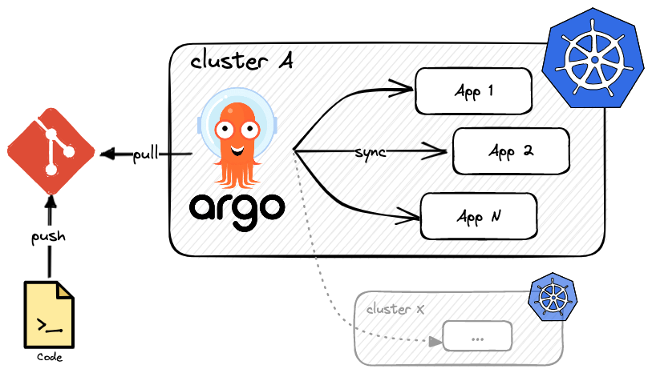

Argo CD
We now have an easy way to deploy and update a complex project using helm and helmfile but we still have to perform these actions manually! How can we automate this and follow GitOps principles? Enter Argo CD, a declarative, GitOps continuous delivery tool for Kubernetes.

Argo CD follows the GitOps pattern of using Git repositories as the source of truth for defining the desired application state. Kubernetes manifests can be specified in several ways: kustomize applications, helm charts, plain YAML manifests, and more. It then automates the deployment of the desired application states in the specified target environments by watching the changes in your git repo (via webhooks) and applying them in a continuous, self-healing manner.
Application deployments can track updates to branches, tags, or pinned to a specific version of manifests at a Git commit.
Argo CD needs to be installed on a Kubernetes cluster, and can from there drive other clusters (multi-clusters support). This is a very powerful pattern that is used by many organizations to manage complex infrastructures.
Note
Another great contender of Argo CD is Flux CD.
Argo CD and helmfile¶
There is sadly no built-in support for helmfile, despite an open issue from August 2019.
One way to keep using helmfile is to have a CI workflow that uses helmfile template and saves the output as raw YAML manifests that can be
later used by Argo CD. Another way is to use plugins. I found and tested two of them:
- travisghansen/argo-cd-helmfile: this plugin is referenced directly in the open issue.
It works well and has tons of options, but there is currently a bug in the Argo CD interface that prevents you from creating an
AppProjectdirectly from the UI using helmfile. All works great if you use the argocd CLI though. - lucj/argocd-helmfile-plugin: this plugin is fairly basic but works.
Installing Argo CD¶
Argo CD can be installed using helm or plain Manifests. Since we are using plugins and are now familiar with helmfile, let's install it this way:
repositories:
- name: argo
url: https://argoproj.github.io/argo-helm
releases:
- name: argocd
namespace: argocd
labels:
app: argocd
chart: argo/argo-cd
version: ~5.28.2
values:
- repoServer:
extraContainers:
- name: plugin
image: lucj/argocd-plugin-helmfile:v0.0.11
command: ["/var/run/argocd/argocd-cmp-server"]
securityContext:
runAsNonRoot: true
runAsUser: 999
volumeMounts:
- mountPath: /var/run/argocd
name: var-files
- mountPath: /home/argocd/cmp-server/plugins
name: plugins
Install it using:
helmfile -f argo-cd/install/helmfile.yaml sync
Now that ArgoCD is installed, connect to the UI by creating a port-forward:
kubectl port-forward -n argocd svc/argocd-server 7000:80
ArgoCD is now available at https://localhost:7000.
The initial admin password is stored in a secret called argocd-initial-admin-secret in the argocd namespace.
You can get it easily by executing:
kubectl -n argocd get secret argocd-initial-admin-secret -o jsonpath="{.data.password}" | base64 -d
Once you log in using the admin user and the password above, ensure you:
- delete the secret (
kubectl -n argocd delete secret argocd-initial-admin-secret), - change the admin password by clicking on the User Info in the left menu bar, then Update Password.
Basics of Argo CD¶
Argo CD registers new Kubernetes Custom Resources (CRs) that define new resource kinds. Those can be managed using kubectl, as regular built-in resources.
Argo CD has three constructs, defined in three different custom resource definitions or Kubernetes objects:
- An
AppProjectis a high-level grouping mechanism in Argo CD that allows defining access controls and configuration overrides for a set of related applications. - An
Applicationis a Kubernetes manifest and a set of parameters that define how a specific application should be deployed and managed by Argo CD. It defines a source repository, the tool used (helm, etc), the destination cluster, etc. - An
ApplicationSetis a higher-level concept that allows defining multiple Applications with similar characteristics using templates, parameters and sources. It enables scaling the number of Application instances with variations in parameters, labels, and annotations. It can, for example, be used to spawn temporary environments when a pull request is created.
Note that you can create an app that creates other apps, which in turn can create other apps. This allows you to declaratively manage a group of apps that can be deployed and configured in concert.
Viewing Custom Resources
If you are curious, you can see the content of a CRD (Custom Resource Definition) using:
kubectl get crd | grep argo
appprojects.argoproj.io 2023-04-18T12:27:11Z
applications.argoproj.io 2023-04-18T12:27:11Z
applicationsets.argoproj.io 2023-04-18T12:27:11Z
kubectl get crd applications.argoproj.io -o yaml
You also query the instances of each crd using kubectl get. To discover the name you must use:
kubectl api-resources | grep argo
applications app,apps argoproj.io/v1alpha1 true Application
applicationsets appset,appsets argoproj.io/v1alpha1 true ApplicationSet
appprojects appproj,appprojs argoproj.io/v1alpha1 true AppProject
kubectl get apps.
To create one of those resources, we can:
- Use the Argo CD UI,
- Use the
argocdCLI, or - Use a YAML file and
kubectl apply.
The App Project¶
By default, argocd creates a default App Project that has no restriction.
Using default, you can deploy anything from and to anywhere.
How to see the default project definition
Use your Kubernetes knowledge!
kubectl get appprojects -n argocd default -o yaml
apiVersion: argoproj.io/v1alpha1
kind: AppProject
metadata:
creationTimestamp: "2023-04-18T12:27:34Z"
generation: 1
name: default
namespace: argocd
resourceVersion: "362197"
uid: 2c95d565-7b55-4f60-a253-002704b82b15
spec:
clusterResourceWhitelist:
- group: '*'
kind: '*'
destinations:
- namespace: '*'
server: '*'
sourceRepos:
- '*'
status: {}
Usually, we want to tighten security. For this demo, we will use the following AppProject.
It creates a project called demo that limits the sources to one of my GitHub repositories (github.com/derlin)
and only allows certain kinds of resources to be created. The two namespaces kube-system and argocd are also restricted: they cannot be used
by an app as a destination.
apiVersion: argoproj.io/v1alpha1
kind: AppProject
metadata:
name: demo
namespace: argocd
# Finalizer that ensures that project is not deleted until it is not referenced by any application
finalizers:
- resources-finalizer.argocd.argoproj.io
spec:
description: Demo project to host rickroller
# Allow manifests to deploy from any Git repos that are mine
sourceRepos:
- "https://github.com/derlin/*"
destinations:
# Do not allow any app to be installed in `kube-system` or `argocd`
- namespace: '!kube-system'
server: "*"
- namespace: '!argocd'
server: '*'
# Other destinations are fine though
- namespace: '*'
server: '*'
# Limit what resources an app is allowed to create
clusterResourceWhitelist:
- group: ""
kind: Namespace
namespaceResourceWhitelist:
- group: ""
kind: Pod
- group: apps
kind: ReplicaSet
- group: apps
kind: Deployment
- group: apps
kind: StatefulSet
- group: ""
kind: Service
- group: networking.k8s.io
kind: Ingress
- group: ""
kind: ConfigMap
- group: ""
kind: Secret
- group: ""
kind: ServiceAccount
- group: ""
kind: Role
- group: ""
kind: RoleBinding
- group: ""
kind: PersistentVolume
- group: ""
kind: PersistentVolumeClaim
Create the project using kubectl apply.
You should be able to now see the project in the Argo CD UI, under Settings > Projects.
The App¶
Now that we have a project, we can create an app to deploy rickroller. Defining an app is quite straightforward:
apiVersion: argoproj.io/v1alpha1
kind: Application
metadata:
namespace: argocd
name: rickroller
# Perform a cascading delete of the Application's resources when the App is deleted
finalizers:
- resources-finalizer.argocd.argoproj.io
spec:
project: demo # you could also use the "default" project if you want
source:
repoURL: https://github.com/derlin/fribourg-linux-seminar-k8s-deploy-like-a-pro
path: helmfile # directory of the helmfile.yaml
targetRevision: HEAD # use the default branch of the repo
destination:
namespace: rickroller
server: https://kubernetes.default.svc
syncPolicy:
# Make Argo CD automatically apply changes without human intervention
automated:
prune: true # delete resources when they are no longer in git
selfHeal: true # perform a sync when the cluster deviates from the state defined in Git (e.g. manual changes)
syncOptions:
- CreateNamespace=true # required to also create namespace
Create the app using kubectl apply.
You should now see the app under Applications. Watch how Argo CD syncs all resources and deploys rickroller automatically! Isn't it great?
Using the argo CLI
You can perform the same operations (and more, such as syncing) using the argocd CLI. As an example, here is how you could create
the rickroller App from the terminal:
#!/usr/bin/env bash
# This is equivalent to running kubectl apply -f app-rickroller.yaml
# It is just an example on how to use the argocd CLI
argocd app create rickroller \
--project demo \
--repo https://github.com/derlin/fribourg-linux-seminar-k8s-deploy-like-a-pro --path helmfile \
--dest-server https://kubernetes.default.svc --dest-namespace rickroller \
--set-finalizer \
--sync-option CreateNamespace=true \
--sync-policy automated --self-heal --auto-prune \
--upsert
What now?¶
Now that we have our Argo CD set, we can commit and push any change and wait for the magic to happen. Since the app is configured with sync enabled, you should see your changes applied after around three minutes of committing. Why three minutes? Because Argo CD polls git repositories every three minutes to detect changes to the manifests.
The automatic sync interval is determined by the
timeout.reconciliationvalue in theargocd-cmConfigMap, which defaults to 180s (3 minutes).
If you want Argo CD to be more reactive, you will need to set up a webhook. This, of course, assumes your Argo CD instance is reachable from the outside.